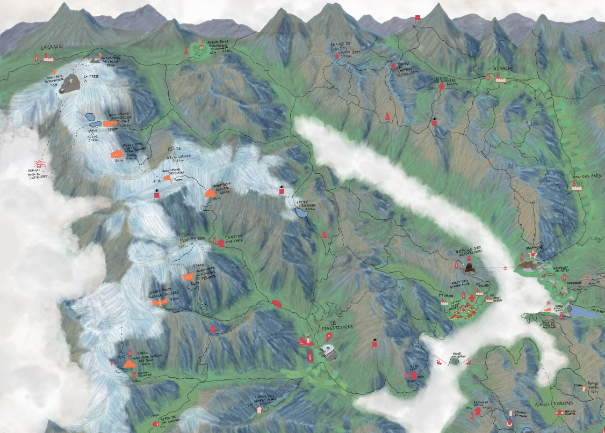
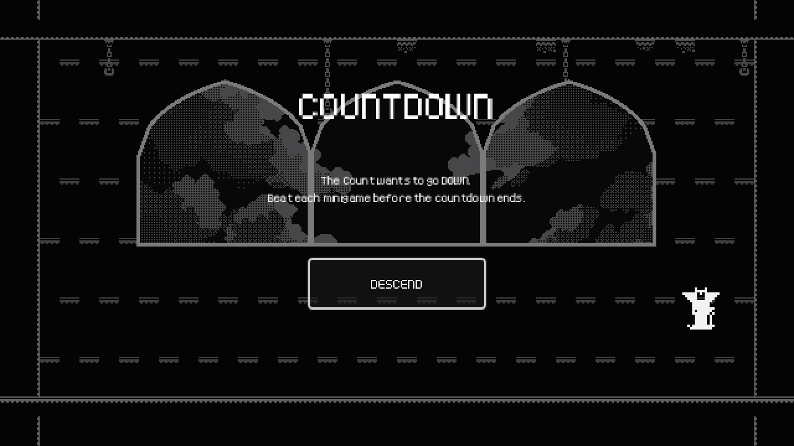
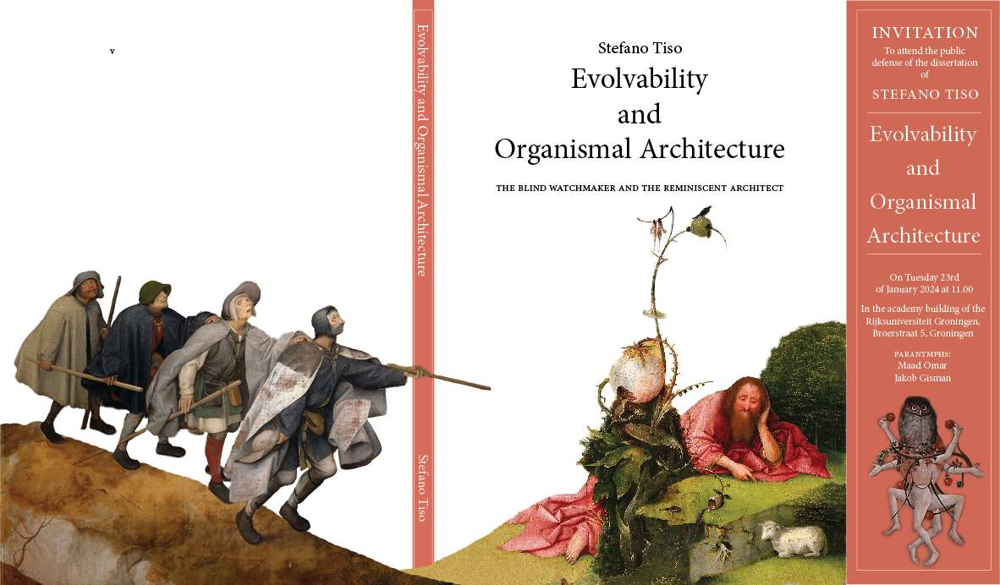
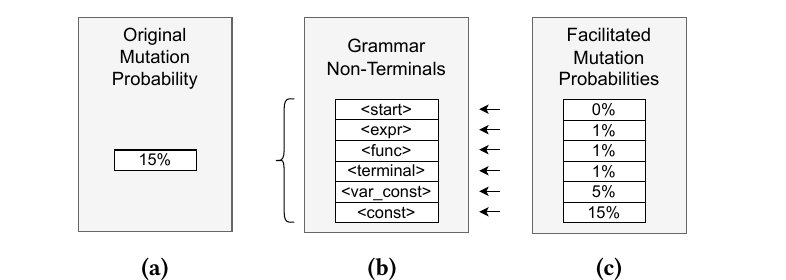
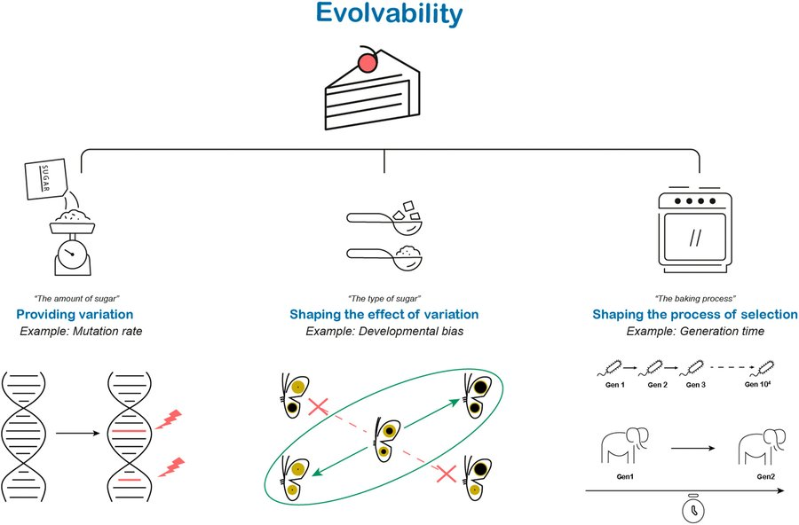
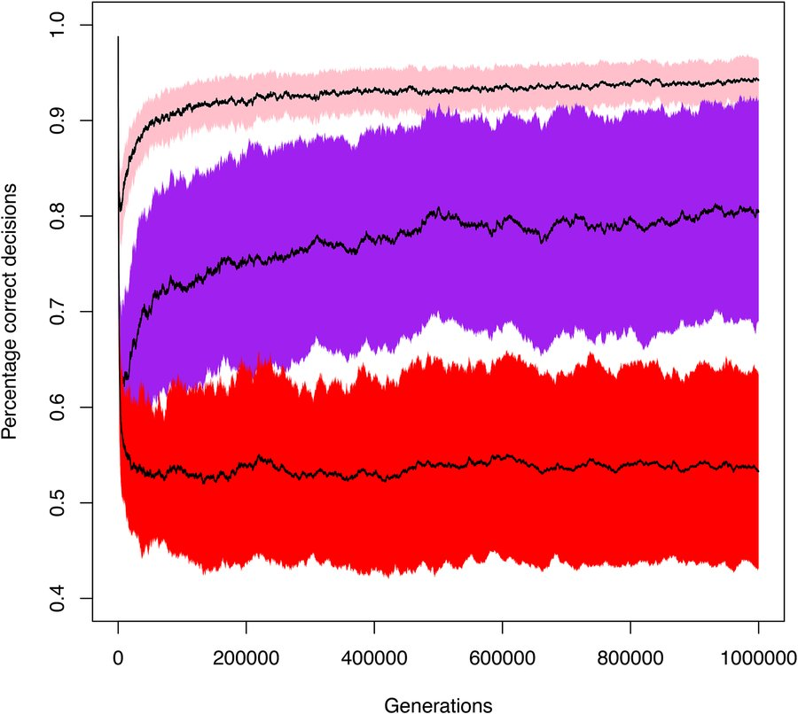
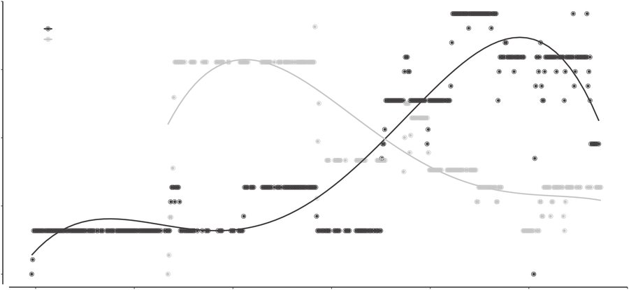

“Il sogno è la coerenza della mente a discapito del mondo, la veglia è la coerenza del mondo a discapito della mente.”
“Ho visto la morte in sogno. […] La guardo levarsi, come una vela, come un’ala, sopra il bordo del precipizio, oltre la scogliera.”
“Le statue rappresentano bestie apocalittiche: tori alati con musi canini. Non sono inquietanti, né imponenti (spesso non più grandi di un bambino), sono semplicemente le bestie che appaiono durante l’apocalisse.”


Play the jam build on itch.io → (work in progress)

PDF preview — view full thesis →

PDF preview — view on ACM Digital Library →

PDF preview — view on publisher's website →

PDF preview — download available

PDF preview — download available
Volunteer teacher — game programming for children. Weekly Unity/C# workshops for ages 6–12; progressive learning sequences combining craft, curiosity, and play.
Campaign GMing and homebrew worlds; theatre writing, acting, and directing — including immersive one‑spectator performances.
| Narrative | Script editing, dialogue trees, interactive narrative design, worldbuilding, editorial leadership |
|---|---|
| Technical | Unity (C#), Python, LangGraph, text-based scripting, multimodal (sound + image) |
| Collaboration | Iteration, feedback loops, documentation, cross‑discipline communication |